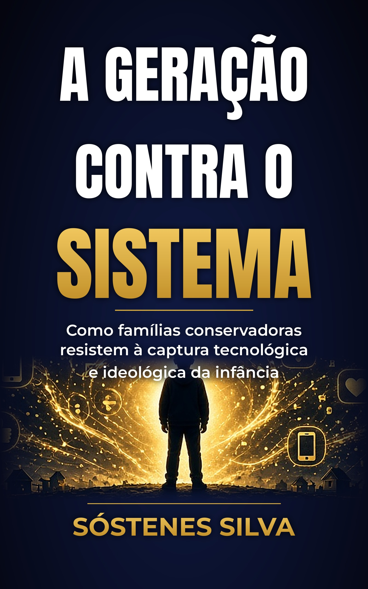
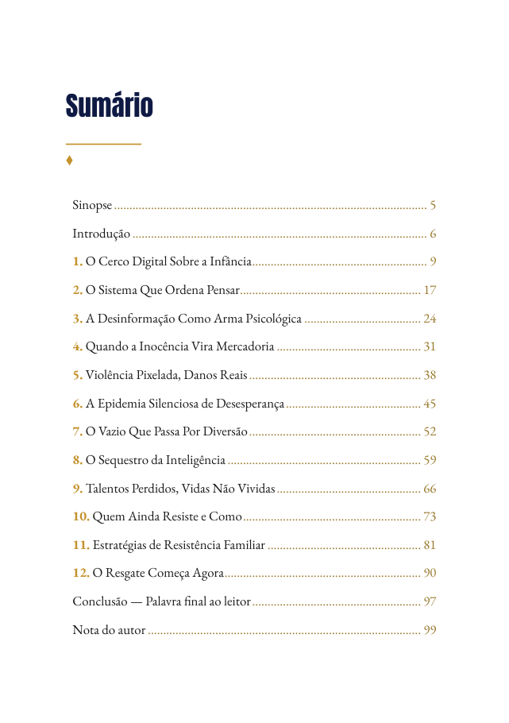
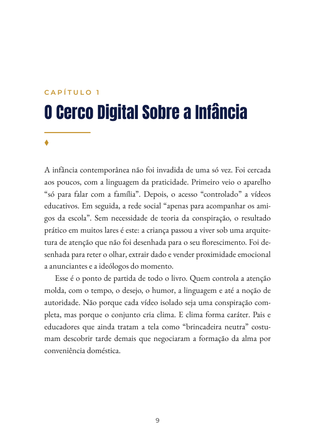

Enquanto a infância é disputada por telas, algoritmos e agendas, famílias conservadoras precisam de clareza — não de pânico. Um guia direto para quem quer resistir com fé, razão e presença.
A infância virou território de disputa. Aplicativos, redes, escolas e narrativas culturais competem pela atenção, pelos valores e pela identidade das crianças — muitas vezes sem o consentimento consciente dos pais.
Este não é um manifesto de ódio nem um manual de isolamento. É um mapa para pais e mães que querem criar filhos com raiz, discernimento e liberdade real — capazes de navegar o mundo sem serem moldados por ele.
Se você sente que “algo está errado” na forma como a cultura trata a infância, este livro organiza esse incômodo e transforma em ação.
Procura um manual de ódio à tecnologia ou de isolamento. O livro propõe sobriedade: usar as ferramentas sem ser usado por elas.


Há poucas décadas, a infância ainda tinha margens. Havia horário de brincar, horário de estudar, horário de dormir — e um intervalo confortável em que a criança podia ser criança sem precisar performar para o mundo. A autoridade dos pais, mesmo imperfeita, ainda era o eixo principal da formação. A escola ensinava conteúdos e, em muitos lugares, valores compartilhados pela comunidade. A rua, a igreja, o clube e a família estendida formavam uma rede informal de cuidado.
Esse mapa mudou.
Hoje, a tela chega antes do café da manhã e permanece depois do jantar. O algoritmo conhece o adolescente melhor do que muitos adultos da casa. Influenciadores falam com a autoridade de quem “entende a geração”. Conteúdos que antes exigiriam esforço para encontrar agora deslizam automaticamente para o polegar. E, por baixo dessa superfície de entretenimento, circulam pressões ideológicas, estéticas e comerciais que moldam o que a criança acredita ser normal, desejável e possível.
Continua no e-book…
Sóstenes Silva é pai, brasileiro e criador de conteúdo (YouTube @iacineserie / IA cine séries, Instagram). Com pouco tempo e muita urgência de pai, escreveu A Geração Contra o Sistema para ajudar famílias conservadoras a resistir à captura tecnológica e ideológica da infância — com clareza, firmeza e presença. Seu trabalho une reflexão cultural e linguagem acessível para quem forma a próxima geração no Brasil de hoje.
É um arquivo PDF com 99 páginas no formato A5, com sumário clicável para ir direto a cada capítulo.
Sim. O PDF abre no celular, tablet ou computador, em qualquer leitor de PDF (inclusive o do próprio navegador ou do WhatsApp).
Depois da confirmação do pagamento, você recebe o arquivo PDF direto no seu WhatsApp.
No momento o pagamento é por Pix. Clique em “Comprar agora”, fale comigo no WhatsApp e eu envio os dados do Pix.
Por enquanto é só a versão digital (e-book em PDF).
E-book completo em PDF · 99 páginas · leitura no celular